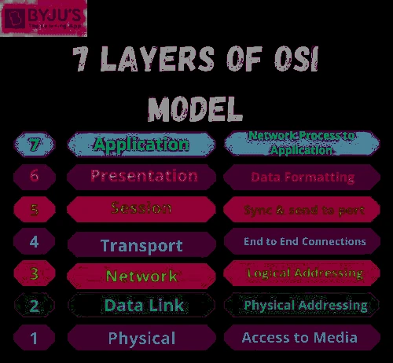

OsyModel
Habilities
The document by its own it's not dangerous but inside it's contain the instruction to create an IA able to lern and control all the red.
Description
It can be confused with the popular osi model but this is different, it is based on in but it but adds a new layer to create
a red linked with an artificial inteligent developed by the rusian goverment, this document is confidential and have intrucction to
create an IA able to control all the red and adquire self-awareness.
Images
We can't share images about the official document
|  |
| Name: A-hop11 |
| Code name: OsyModel |
| Danger: 9 |
| Zone: In our deparment |
| Situation: In container |